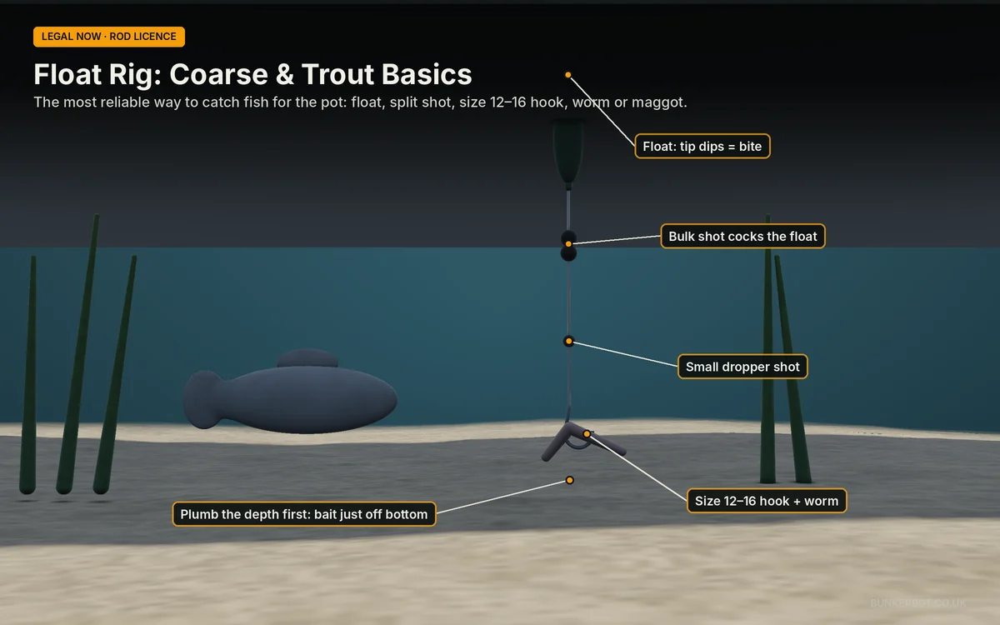
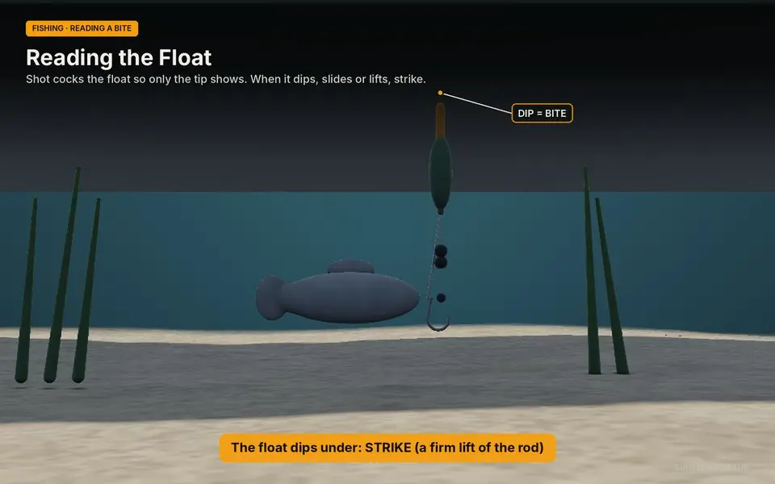
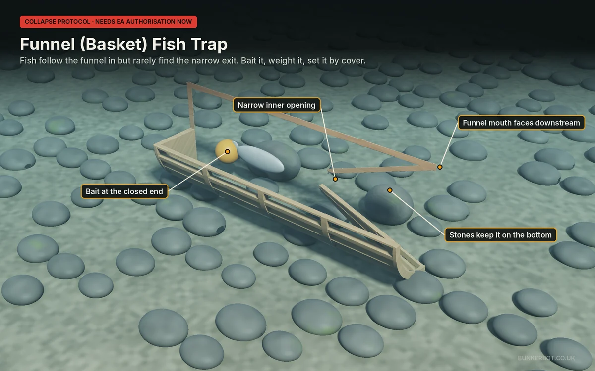
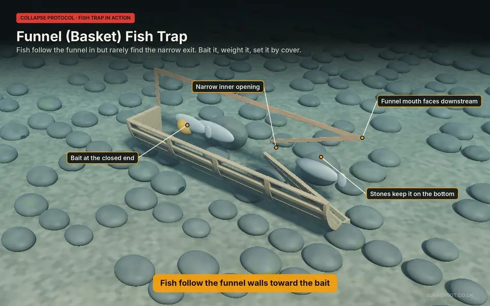
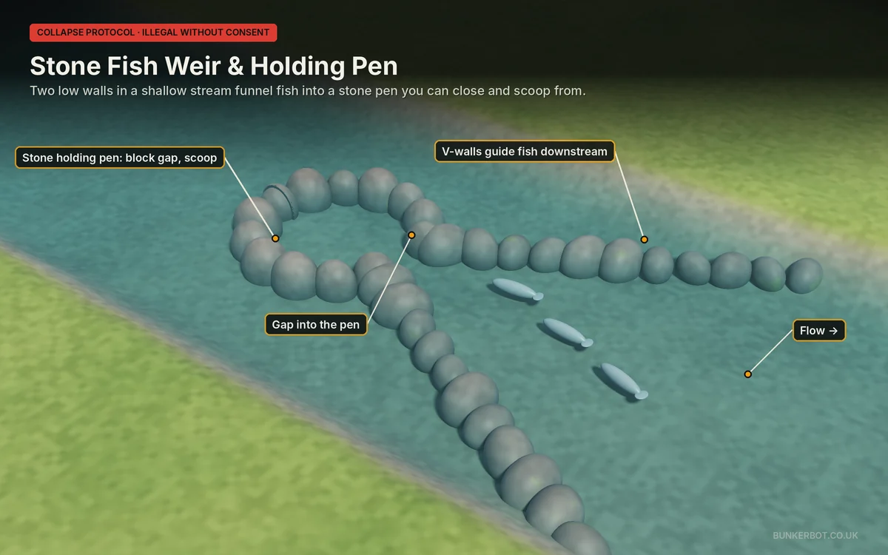

UK Survival Fishing
The most reliable wild protein in Britain: rivers, lakes, canals and 11,000 miles of coast.
Nearly everyone in the UK lives within an hour of fishable water. A rod licence costs less than a tank of fuel. Fish are fattier than rabbit, and mackerel, herring and eels are very rich. And sea fishing in most of the UK needs no licence at all.
🟢 LEGAL NOW: rod and line, within the rules below. 🔴 COLLAPSE PROTOCOL: unattended lines, traps, nets and weirs. Illegal without authorisation today; included for grid-down only.
1. The Rules
open seasons, close seasons and what to sow when are all on one interactive calendar: see Hunting & Trapping: seasons.
England & Wales (freshwater)
- Rod licence required for anyone 13+ fishing for salmon, trout, freshwater fish or eel. Under-13s need none; 13–16s get one free.
- 2026 prices: 1-day £7.30, 8-day £14.70, 12-month £36.80 (trout & coarse, 2 rods); £55.30 (3 rods); £93.10 (salmon & sea trout). Concessions for 66+ and disabled anglers. Buy at gov.uk/fishing-licences.
- Plus permission: almost all water is owned. Buy a day ticket, join a club (often £40–120/yr for miles of water), or use free stretches (some canals and public waters).
- Coarse close season: 15 March – 15 June on rivers, streams, drains, some canals and SSSI stillwaters. Most stillwaters and canals stay open.
- Trout/salmon seasons vary by region: check local byelaws.
- Wales: all salmon must be returned. Since January 2020, every salmon caught by rod in Wales goes back alive with minimum injury and delay. Sea trout over 60 cm, and on most rivers all sea trout caught before 1 May, must also be returned. Selling rod-caught salmon is an offence. The Wye, Usk, Severn and Dee have their own catch-and-release byelaws. Byelaws are set by Natural Resources Wales (NRW) in Wales and the Environment Agency in England.
- Size and bag limits apply in local byelaws, and eels must be returned in most places (critically endangered).
- Never leave a line unattended.
Scotland
- No rod licence, but you need permission/a permit from the owner or angling association for almost all water. Salmon & sea trout are heavily regulated; brown trout close season 7 Oct – 14 Mar. There is no coarse close season.
Northern Ireland
- Separate DAERA / Loughs Agency licences and permits.
Sea fishing (all UK)
- No licence for recreational rod fishing from shore or boat.
- Minimum sizes (MCRS) apply. Common ones:
| Species | Minimum size |
|---|---|
| Bass | 42 cm; 3 per angler per day, except 1 Feb–31 Mar catch-and-release only (2026 rules) |
| Pollack | 30 cm (a recreational bag limit of 3/day was agreed in the 2026 UK–EU deal: check it applies where you fish) |
| Cod | 35 cm |
| Whiting | 27 cm |
| Mackerel | 30 cm (20 cm in North Sea) |
| Plaice | 27 cm |
| Lobster | 87 mm carapace (and no berried females) |
Local IFCA byelaws can be stricter. You can never sell recreationally caught bass.
2. What & Where: Freshwater
| Species | Where | When | Best method | Eating |
|---|---|---|---|---|
| Brown trout | Upland streams, chalkstreams, lochs (Scotland, Wales, Peak District, Dartmoor, Lakes) | Spring–autumn | Worm on a light float/ledger, spinners, fly | ★★★★★ |
| Rainbow trout | Stocked stillwaters ("put and take" fisheries) | Year-round | Lures, fly, PowerBait-style paste | ★★★★ |
| Perch | Canals, rivers, lakes everywhere | Year-round, best autumn | Worm on float, small spinners, drop-shot | ★★★★★ Firm white meat |
| Pike | Lakes, canals, slow rivers, Scottish lochs | Oct–Mar | Dead-bait (sardine/mackerel), large lures | ★★★ Bony; mince for fishcakes |
| Roach, rudd, bream | Almost all lowland water | Year-round | Maggot/caster/bread on float | ★★ Bony, muddy taste; survival protein |
| Carp & tench | Lakes, ponds, gravel pits | Summer | Sweetcorn/bread/boilies on ledger | ★★ Purge in clean water 2–3 days. Most carp fisheries are catch-and-release only. |
| Chub & barbel | Rivers | Jun–Mar | Bread, luncheon meat, pellets | ★ Bony |
| Eel | Everywhere | Summer nights | Worm on ledger | ★★★★★ Rich, fatty, but must be released in most waters |
| Signal crayfish | Many lowland rivers | Summer | Trap: needs EA authorisation | ★★★★ |
Perch and stocked trout. Perch shoal up: catch one and you'll often catch twenty. Put-and-take trout fisheries expect you to take fish home (check the bag limit).
3. What & Where: Sea
| Species | Where | When | Method | Eating |
|---|---|---|---|---|
| Mackerel | Piers, harbour walls, rocky headlands, boats; all coasts | Jun–Oct | Feathers or sabiki, spinners | ★★★★★ Oily; eat or smoke same day |
| Bass | Surf beaches, estuaries, rocks (S & W coasts best) | Apr–Nov | Lures, crab/sandeel bait | ★★★★★ (respect limits) |
| Pollack | Rocky coasts, wrecks, kelp | Year-round, best summer | Soft plastics, spinners | ★★★★ |
| Cod & whiting | East coast & Bristol Channel beaches, piers | Oct–Feb | Lugworm/squid on ledger at night | ★★★★★ |
| Plaice, dab, flounder | Sandy beaches, estuaries | Year-round | Small hooks, ragworm/lugworm | ★★★★ |
| Garfish, scad, herring | Harbours, piers | Summer/autumn | Small feathers, float with fish strip | ★★★ |
| Mullet | Harbours, estuaries | Summer | Bread flake on float | ★★ (hard to hook) |
| Wrasse | Rocky coasts | Summer | Crab, worm | ★ Return (bony, slow-growing) |
Most shore fishing is best two hours either side of high tide, especially at dawn, dusk and at night. Download tide tables for your area and print them.
4. Core Methods Legal now


Float fishing (lakes, canals, slow rivers)
- Rod: 11–13 ft float rod; fixed-spool reel; 4–6 lb line.
- Float: waggler (attached bottom-end only) for stillwaters; stick float for flowing water.
- Shot: bulk most of the shot just under the float so only the tip shows; add one small "tell-tale" shot near the hook.
- Hook: size 12–16 for maggot and worm, size 8–10 for bread or corn.
- Plumb the depth: clip a plummet or heavy shot on the hook, cast, and adjust until the float just shows. Set the bait to sit just off the bottom.
- Feed little and often: throw in a few maggots or a pinch of groundbait every cast.
- Strike when the float dips, slides away or lifts.
Ledgering (bottom fishing: rivers, sea, big lakes)
A weight (or feeder) on the line takes the bait to the bottom; bites show on the rod tip. Use a running ledger (weight slides on the main line) so fish feel little resistance.
Lure fishing / spinning
Light rod + spinners, spoons or soft plastics. Cover water while moving: good for perch, pike, trout, bass, pollack and mackerel. The best "searching" method when you don't know where fish are.
Feathers & sabiki (sea)
A string of 3–6 feathered hooks with a 2–4 oz weight, cast and retrieved with a jigging action. When mackerel are in, you can catch dozens.
Handline (no rod)
50 m of 15–20 lb mono on a yo-yo or wooden frame, plus a weight, hook and bait. Cheap, packable and surprisingly effective from piers and rocks.
5. Bait You Can Find
| Bait | Where | Good for |
|---|---|---|
| Lobworms / earthworms | Lawns after rain at night (torch), compost heaps, under logs | Almost every freshwater fish, plus flatfish and cod |
| Brandling worms | Compost & manure heaps | Perch, roach, trout |
| Ragworm & lugworm | Dig at low tide on estuary mud and sand (casts and holes) | Sea fish of all kinds |
| Peeler crab | Under rocks and weed at low tide (spring–summer) | Bass, cod, flounder |
| Mussels, limpets | Rocks | Wrasse, cod, pollack |
| Mackerel strips | Your first catch | Everything in the sea, pike |
| Bread, sweetcorn, cheese paste | Stores | Roach, carp, chub, mullet |
| Insects, slugs, maggots | Gardens, carcasses | Trout, chub, perch |
6. Shellfish & Crustaceans
Filter-feeders (mussels, oysters, cockles, clams) concentrate sewage bacteria, norovirus and algal biotoxins (PSP, which can paralyse). Only gather from areas classified for shellfish harvesting (check the FSA classification maps and local council warnings). Avoid anywhere near outfalls, harbours or after heavy rain. Don't gather in warm months during algal blooms. Cook thoroughly; discard any that don't open.
- Mussels: rocky shores. Harvest at low tide, take clean, closed shells >5 cm, purge them in clean seawater for 24 h, then steam.
- Cockles & clams: rake sandy mud at low tide. Many beds have local byelaws and permits.
- Winkles & limpets: easy, safer (grazers, not filter-feeders). Boil and pick.
- Crabs (edible, velvet, shore): under rocks at low tide; minimum sizes apply.
- Crayfish (freshwater): Signal crayfish trapping needs written Environment Agency/NRW consent and tagged traps. It's banned for personal consumption in Scotland, and native white-clawed crayfish are fully protected.
7. Collapse Collapse Protocol: Passive Fishing
In England & Wales it is illegal to leave a rod or line unattended, and nets, traps, fixed engines and weirs need authorisation from the Environment Agency (England) or Natural Resources Wales. They take fish indiscriminately, including protected salmon, sea trout and eels. This section is for a long-term grid-down collapse only. Practise by building traps now, not setting them. BunkerBot accepts no liability for misuse.
7a. Funnel (basket) trap


- Build: a cylinder of willow/hazel withies, wire mesh, or two plastic drinks bottles (cut the top off one and invert it into the other for minnows/bait fish).
- Funnel: the inner opening is just bigger than your target fish.
- Bait: fish guts, bread, worms or meat in a mesh bag at the closed end.
- Set: on the bottom, weighted with stones, next to cover (undercut banks, weed beds, below weirs), mouth facing downstream. Check daily.
7b. Stone weir & holding pen

- In a shallow stream (knee-deep), build two low stone walls in a V pointing downstream, leading into a circular stone pen.
- Fish moving downstream (or herded by wading downstream yourself) are funnelled into the pen. Close the gap with a stone, then scoop with a net or by hand.
- Tidal version: a stone or stake wall on a gently sloping beach traps fish as the tide falls. It's very productive on the right beach.
7c. Night lines / trotlines
A main line staked across a river or pegged from the bank, with 5–20 short droppers carrying baited hooks (worm or fish strip), left overnight. This is exactly what UK law bans, and it is very effective. Check at first light; cut and remove every line when you leave.
7d. Gill nets
Fine monofilament nets that tangle fish by the gills. Devastatingly effective, and completely illegal to use without a licence: they kill everything, including diving birds and otters. If you cache one for a collapse, choose a mesh size for your target (50–75 mm for trout-sized fish) and check it at least twice a day.
7e. Hand methods
- Tickling/guddling trout: slide a hand under a fish resting below an undercut bank, stroke its belly, then flip it out. It's a real skill, and illegal for trout and salmon now.
- Spearing: a forked hazel spear (multi-prong) at night with a torch in shallow water. Aim below the fish to allow for refraction.
8. Processing & Preserving Fish
Dispatch
Hit the fish hard on top of the head, just behind the eyes, with a priest (a short heavy club), 1–2 sharp blows. Then bleed it by cutting through the gills. Bled fish taste better and keep longer.
Gutting
- Insert the knife tip into the vent and slit forward to the gills.
- Pull out the guts; scrape out the dark blood line along the spine with a thumbnail or spoon.
- Rinse in clean water. Keep fish cool and out of the sun. Wet grass or a damp cloth in shade works.
Filleting (round fish)
- Cut behind the gill cover down to the backbone.
- Turn the blade flat and run it along the backbone to the tail, keeping it pressed against the bones.
- Flip and repeat. Remove the rib bones, and skin the fillets if wanted.
Preserving
| Method | Notes |
|---|---|
| Hot smoking | Brine (8–10% salt) for 30–60 min, dry until tacky, then smoke at 70–90 °C until flaky. Mackerel and trout are excellent. Keeps ~1 week chilled. |
| Salting (salt cod style) | Split, bury in salt for days, then air-dry. Keeps months. Soak before use. |
| Air-drying | Thin strips in wind and sun on racks (works in the UK in dry, breezy spells). |
| Pickling | Herring and mackerel in vinegar brine (rollmops). |
| Pressure canning | Fish must be pressure-canned (risk of botulism otherwise). |
Cook freshwater fish thoroughly (63 °C+). Raw or lightly cured freshwater fish can carry tapeworm. For raw or cold-smoked fish, freeze first at −20 °C for at least 24 h.
9. Kit Tiers
Tier 0: Pocket kit (£10–25)
- Handline yo-yo + 50 m 15 lb line
- Hooks (sizes 6–16), split shot, 2 small floats, 2 small spinners, 3 sets of mackerel feathers, 2 × 2 oz leads
- All in a small tin. Lives in every grab bag.
Tier 1: Starter (£60–150 · beginner)
- Rod licence (England & Wales)
- 10 ft spinning/float rod + fixed-spool reel with 6 lb line
- Float box, shot, hooks to nylon, disgorger, landing net, priest, bait box
- Spinners and soft lures; mackerel feathers + 2–4 oz weights
- Skills: tie a clinch knot and a palomar; plumb depth; gut and fillet
Tier 2: Committed (£150–600)
- Separate sea rod (11–12 ft beachcaster or bass lure rod) + reel
- Freshwater float rod + light lure rod
- Bait pump/fork for worms, headtorch, waders
- Club membership(s) for local waters
- Smoker (cold or hot), vacuum sealer, fish knife
- Skills: read tides and weather; catch mackerel, perch and trout reliably
Tier 3: Serious (£600–2,500)
- Small boat or kayak with lifejacket, VHF/PLB (the boat opens up pollack, cod and wrecks)
- Lobster/crab pots (check local IFCA rules: some areas require permits or limit pot numbers)
- Shellfish-classification knowledge for your coast
- Smokehouse, salt store, pressure canner
Tier 4: Collapse cache (£100–400, stored)
- 1,000 assorted hooks, 3 km of mono in several breaking strains, braid, swivels
- Trotline kit (main line + 50 snoods + stakes)
- Gill net (25 m, 50–60 mm mesh) and spare floats/leads
- Collapsible funnel traps (minnow/crayfish style) + mesh roll + cable ties
- Cast net
- Spare reels, rod rings, glue, whipping thread
- Printed tide tables (multi-year), local water maps with fish-holding spots marked
Related Sections: UK Survival Hunting & Trapping → Butchery & Game Processing → Smallholding Livestock → Food & Water